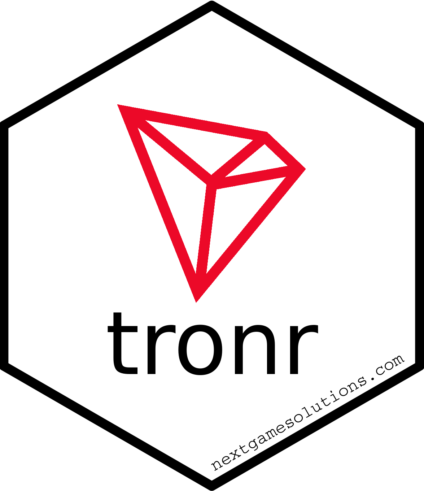
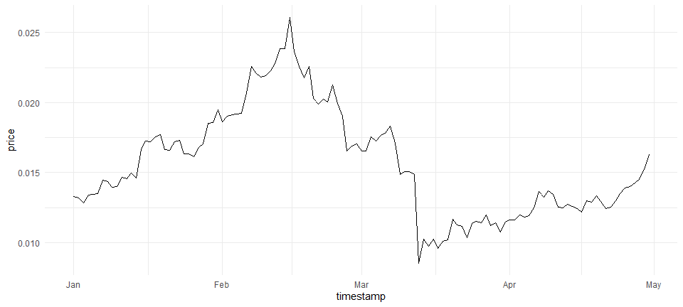

tronr 
tronr is a toolbox to explore the TRON blockchain. This R package allows one to collect data on the blockchain’s accounts, transactions, token transfers, and smart contract events. In addition, users can query the current and historical market status of Tronix (TRX), the native currency of TRON.
Installation
At the moment, tronr is only available on GitHub and can be installed with:
# install.packages("devtools")
devtools::install_github("next-game-solutions/tronr")A CRAN version of the package is planned for release in the near future.
Examples
Detailed examples of how to tronr can be found in its online documentation. Provided below are just a few common queries:
library(tronr)
library(dplyr)
library(ggplot2)
# Current price of TRX expressed in USD, EUR and BTC (Bitcoin):
get_current_trx_price(vs_currencies = c("usd", "eur", "btc"))
#> # A tibble: 3 x 3
#> trx_price vs_currency last_updated_at
#> <dbl> <chr> <dttm>
#> 1 0.0528 usd 2021-03-13 17:14:27
#> 2 0.0441 eur 2021-03-13 17:14:27
#> 3 0.000000882 btc 2021-03-13 17:14:27
# Querying the TRX market data for a historical period, and plotting the
# evolution of price:
(min_timestamp <- as.POSIXct("2020-01-01 00:00:00") %>% to_unix_timestamp())
#> [1] "1577836800000"
(max_timestamp = as.POSIXct("2020-05-01 00:00:00") %>% to_unix_timestamp())
#> [1] "1588287600000"
price_history <- get_trx_market_data_for_time_range(
vs_currency = "usd",
min_timestamp = min_timestamp,
max_timestamp = max_timestamp
)
glimpse(price_history)
#> Rows: 121
#> Columns: 5
#> $ timestamp <dttm> 2020-01-01, 2020-01-02, 2020-01-03, 2020-01-04, ...
#> $ vs_currency <chr> "usd", "usd", "usd", "usd", "usd", "usd", "usd", ...
#> $ price <dbl> 0.01329452, 0.01319943, 0.01284472, 0.01337084, 0...
#> $ total_trading_vol <dbl> 1134528759, 1032624901, 1056549454, 1168793811, 1...
#> $ market_cap <dbl> 877119319, 872350811, 848482045, 885589788, 88832...
price_history %>%
ggplot(aes(timestamp, price)) +
geom_line() +
theme_minimal()
# Information on the latest block on the chain:
get_block_info(latest = TRUE) %>%
glimpse()
#> Rows: 1
#> Columns: 11
#> $ request_time <dttm> 2021-03-13 17:17:19
#> $ block_number <chr> "28421375"
#> $ timestamp <dttm> 2021-03-13 17:16:18
#> $ hash <chr> "0000000001b1acff0d8ff96560926e753042e8c49eef01185b...
#> $ parent_hash <chr> "0000000001b1acfe01bd715b8b90fd4732aee4c7dbcbebd9c5...
#> $ tx_trie_root <chr> "2AN1jbwpFGxNGGS9qgC5Ebz6XJCpKDZuF3bmAJCo3kiBMYGUJH"
#> $ confirmed <lgl> TRUE
#> $ size <int> 25727
#> $ witness_address <chr> "TJ2aDMgeipmoZRuUEru2ri8t7TGkxnm6qY"
#> $ tx_count <int> 101
#> $ tx <list> [<tbl_df[101 x 4]>]
# Current balance of an account:
get_account_balance("TQjaZ9FD473QBTdUzMLmSyoGB6Yz1CGpux") %>%
glimpse()
#> Rows: 1
#> Columns: 10
#> $ request_time <dttm> 2021-03-13 17:17:22
#> $ address <chr> "TQjaZ9FD473QBTdUzMLmSyoGB6Yz1CGpux"
#> $ name <chr> "SunTRXV3Pool"
#> $ total_tx <int> 69064
#> $ bandwidth <list> [<tbl_df[1 x 20]>]
#> $ trx_balance <dbl> 4430817
#> $ n_trc20 <int> 16
#> $ trc20 <list> [<tbl_df[16 x 7]>]
#> $ n_trc10 <int> 12
#> $ trc10 <list> [<tbl_df[12 x 8]>]
# TRC-10 asset transfers to / from an account within a time range:
get_trc10_transfers(
related_address = "TMaBqmMRekKZMQEq3u3QrJpGDwPYZZo87V",
min_timestamp = "1577837400000",
max_timestamp = "1577837430000"
) %>% glimpse()
#> Rows: 2
#> Columns: 13
#> $ tx_id <chr> "675a3606a414f0ea09979688889df0237911d368d...
#> $ block_number <chr> "15860788", "15860784"
#> $ timestamp <dttm> 2020-01-01 00:10:27, 2020-01-01 00:10:15
#> $ from_address <chr> "TMaBqmMRekKZMQEq3u3QrJpGDwPYZZo87V", "TMa...
#> $ to_address <chr> "TT5W8MPbYJih9R586kTszb4LoybzyUSkbq", "TBh...
#> $ is_contract_from_address <lgl> FALSE, FALSE
#> $ is_contract_to_address <lgl> FALSE, FALSE
#> $ contract_result <chr> "SUCCESS", "SUCCESS"
#> $ confirmed <lgl> TRUE, TRUE
#> $ amount <dbl> 10, 10
#> $ token_id <chr> "1002830", "1002830"
#> $ token_name <chr> "AUP", "AUP"
#> $ token_abbr <chr> "AUP", "AUP"
Things to keep in mind when using tronr
The design of this package is rather opinionated, which among other aspects means the following:
- Under the hood, most of the transaction-related data are queried in
tronrvia a public API that powers the Tronscan website. This has a few important implications:- The Tronscan API is considerably slower than the TronGrid API, which is the recommended tool for use cases that require a computationally efficient and robust mechanism to extract large amounts of data from the TRON blockchain. However, the Tronscan API was chosen due to the richer and more schema-consistent data it returns. As the TronGrid API matures, the decision on using the Tronscan API in
tronrmay be re-considered. - Attempts to perform frequent and/or “heavy” queries from the same IP address using
tronrmay be treated by the Tronscan servers as denial-of-service attacks and lead to black-listing of that IP address. Users oftronrare thus kindly asked to be considerate and implement the respective safeguards in their code (e.g., breaking the queries into smaller chunks, with pauses in between). - As a result of the previous two points,
tronris not intended for the development of high-load analytical applications.
- The Tronscan API is considerably slower than the TronGrid API, which is the recommended tool for use cases that require a computationally efficient and robust mechanism to extract large amounts of data from the TRON blockchain. However, the Tronscan API was chosen due to the richer and more schema-consistent data it returns. As the TronGrid API matures, the decision on using the Tronscan API in
- Many of the
tronrfunctions return data in the form of nested tibbles (see examples above). Arguably, this is a natural choice for such data, given their hierarchical structure. Nested tibbles were chosen also because they represent a “tidy” data format compatible with thetidyversetoolkit (in particular, thetidyrpackage). Admittedly, though, not all R users prefer working with thetidyversetools and this makestronrsomewhat less accessible and attractive for such users.
Getting help
If you encounter a clear bug, please file an issue with a minimal reproducible example on GitHub.
License
This package is licensed to you under the terms of the MIT License.
The TRON logo (“red diamond”) used in the tronr hexagon sticker is property of the TRON Foundation. It originates from the official icon pack, which is available for download and free use at the Foundation’s website.
Copyright (c) 2021 Next Game Solutions OÜ
Please note that this project is released with a Contributor Code of Conduct. By participating in this project you agree to abide by its terms.